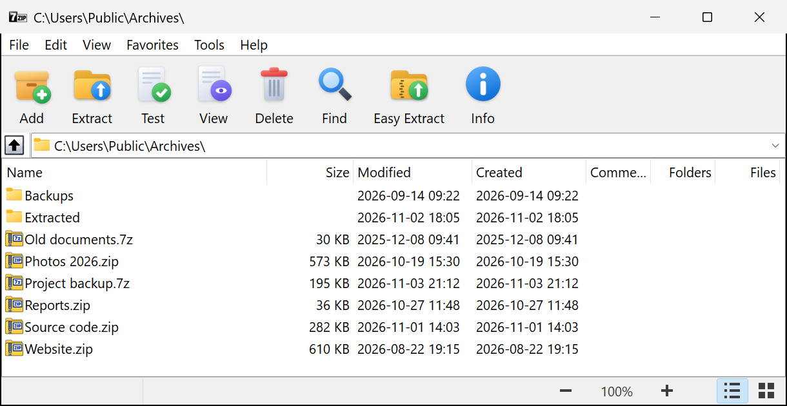

The Modern UI edition is a modified 7-Zip File Manager with a new, modern user interface. Only the user interface was changed. Compression and extraction code is the original 7-Zip code.

The Modern UI settings are saved in the registry key HKEY_CURRENT_USER\Software\7-Zip\FM,
together with the settings of the original 7-Zip File Manager:
Theme, ToolbarLayout, ToolbarIconStyle, ListZoom, SizeInKB.
Modern UI modifications by saturn76-source.
7-Zip Copyright (c) 1999-2026 Igor Pavlov. GNU LGPL.
This is not an official 7-Zip release.